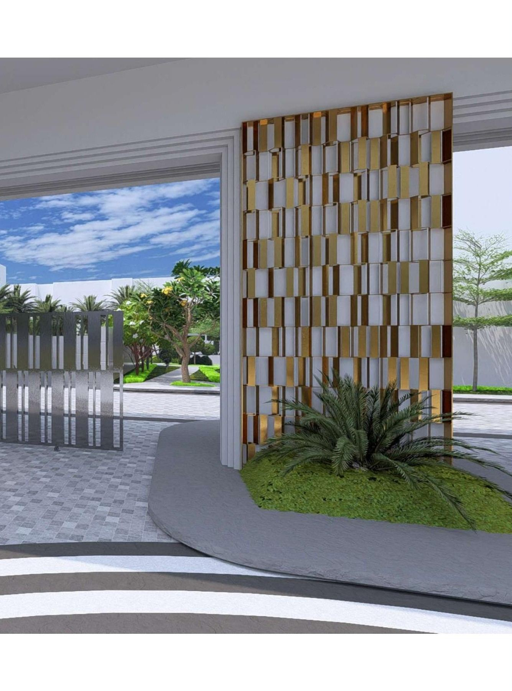

Investment
Investment
Why Invest in Zirakpur Real Estate?
Covers Zirakpur's position on the Chandigarh–Ambala–Patiala corridor, infrastructure growth, and what drives long-term property demand in the belt.
LifestyleWhat Luxury Living Really Looks Like in Zirakpur
Explores how amenities, gated security and landscaped common areas are reshaping expectations for premium apartment living in the Tricity suburbs.
 Guide
Guide
The Real Benefits of High-Rise Apartment Living
A practical look at why more Tricity buyers are choosing high-rise developments over independent floors — space efficiency, amenities and security.
 Investment
Investment
Real Estate Investment Near Chandigarh: What to Know
Breaks down how proximity to Chandigarh, Mohali and Panchkula affects resale value, rental demand and commute-driven buying decisions.

Buying GuideA First-Time Home Buyer's Guide to Zirakpur
Walks through RERA verification, comparing carpet vs. super area, budgeting for registration costs, and questions to ask before booking a unit.
Each post is written independently and does not restate project-specific facts beyond what's published on our other pages — always confirm current details on our Price and FAQ pages.